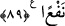

89. O şeyin, kendilerine hiçbir sözle mukabele edemeyeceğini, kendilerine ne bir
zarar ne de bir fayda verme gücünde olmadığını görmezler mi?
“O şeyin, kendilerine hiçbir sözle mukabele edemeyeceğini,” cevap veremeyeceğini
“kendilerine ne bir zarar ne de bir fayda verme gücünde olmadığını” yani kendisine
tapanlara bir menfaat sağlamaya ya da onlara gelebilecek herhangi bir zararı gidermeye
muktedir olmadığını “görmezler mi?” Yani hiç düşünüp bilmiyorlar mı? O halde onun
ilâh olduğunu nasıl düşünüyorlar?
et-Te’vîlâtü’n-Necmiyye”de şöyle der: “Âyette şu husûsa işaret vardır: Allah Teâlâ
bir toplumu, bir belâ ile sınamayı murâd ettiği vakit onların akıl sahibi olanlarının
başından aklını alır. Apaçık mûcizeleri gördükten sonra gözlerini kör eder de onlar
sanki hiçbir şey görmemiş gibi olurlar. Bu sebepledir âyette şöyle buyrulur: Onun bir
buzağı olduğunu ve acizliğini “görmezler mi?”
Bu âyetlerde bâzı işâretler vardır:
1- Allah için öfkelenmek, kâmil insanın yaratılışının gereklerindendir. Çünkü insân-ı
kâmil, hazret-i ilâhiyyenin aynasıdır. Bu durum gadaba/öfkeye de şâmildir. Nitekim
rivayet edilmiştir ki Rasûlullah (s.a.) kendi nefsi için öfkelenmezdi. Allah için bir şeye
öfkelendiğinde ise onun kızgınlığını hiçbir şey gideremezdi.[95] Allâh’ın öyle kulları var
ki onun öfkesinden dolayı Allah gadab eder, razı olduğu için de razı olur. Onun gadabı,
Allâh’ın gadabının ta kendisi, rızâsı da Allâh’ın rızasının aynıdır. Hakîkatte mutlak
olarak onların gadabı, Hakk’ın gadabının kendilerinde taayyününden ibarettir. Çünkü
onlar Allâh’ın zâtının, isimlerinin ve sıfatlarının aynasıdırlar. Onların gadabları diğer
insanlarınki gibi değildir.
Ebû Abdullah Râzî şöyle der ki: “Allah bizim esefimiz gibi esef etmez. Fakat onun
esef eden ve râzı olan dostları vardır. Allah onların hoşnutluğunu kendi rızâsı, öfkelerini
de kendi gadabı kılmıştır. Bu sebeple O şöyle buyurmuştur: “Kim benim bir velî
kulumu aşağılarsa, bana harp ilan etmiş demektir.”[96]
Şu halde akıllı kişiye gereken, peygamberlerin ve Allah dostlarının yoluna tâbi olmak,
çirkin bir şey gördüğünde de ona Hak için gadab etmektir.
Eğer elinden münkeri nehyetme gelirse,
Sana elsiz, ayaksız kişiler gibi oturmak yakışmaz.
Eğer elinde ve dilinde bunu yapacak gücün yoksa,
İnsanlara kalb ile himmetle adamlığını göster.